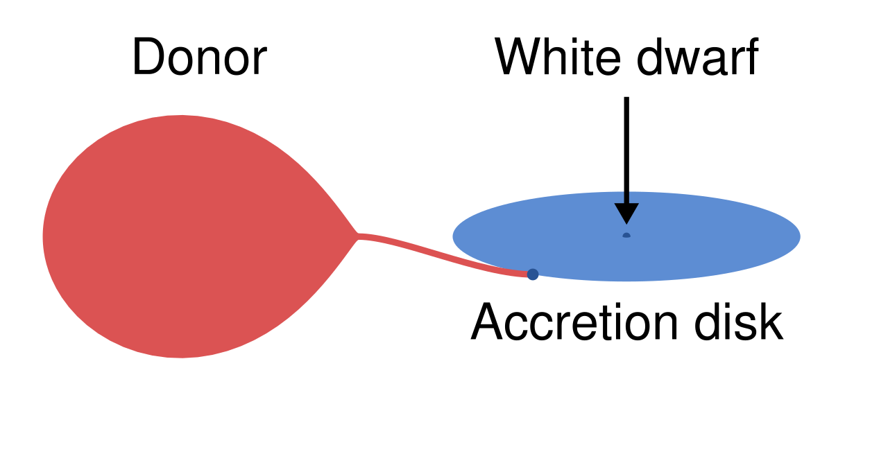

Data & Code
Public datasets, catalogs, and code from my research
Accreting Ultracompact white dwarf binaries
Working together with Matthew Green, we are trying to keep track of all known AM CVn binaries; accreting white dwarf systems with orbital periods of 5-65 minutes. See Green & van Roestel & Wong (2025) for details.
Access Catalog
Eclipsing white dwarf catalogue
Eclipsing white dwarfs are useful for various purposes; measuring fundamental parameters, eclipse timing, and finding dark companions to white dwarfs. I have built a catalogue of all eclipsing white dwarfs in the ZTF data, and am expanding with other surveys (ATLAS, BlackGEM). The catalogue will be out soon, but is available upon request.
Explore the Catalogue
White Dwarf Transiting Debris Alerts
Real-time alerts for transiting debris events around white dwarfs, detected using survey data. These transits are signatures of planetary material orbiting close to white dwarfs.
View AlertsDwarf novae outbursts
Dwarf novae outbursts are abrupt brightenings (by 2–8 magnitudes) of cataclysmic variable stars. They are the result of a thermal-viscous instability in the accretion disk surrounding a white dwarf. The most common type are white dwarfs accreting from red dwarf stars, but they also occur in the much more rare AM CVn systems. In my search for AM CVn systems in ZTF van Roestel et al. (2021), I found it useful to have a catalogue of all dwarf novae candidates (!). The list is not very clean and curated, but I'm happy to share it 'as-is'.
